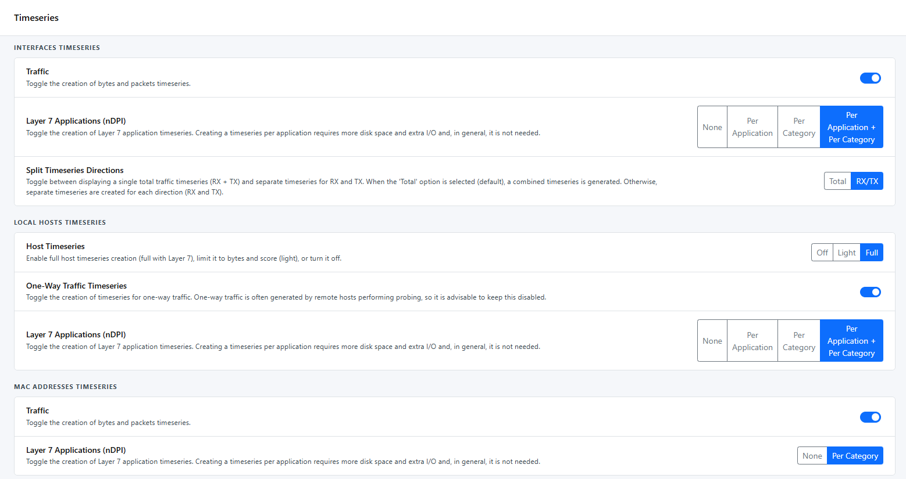
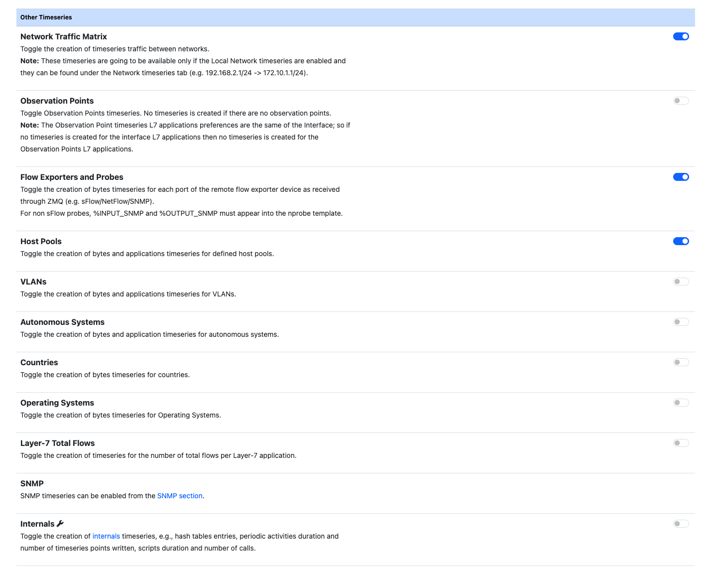
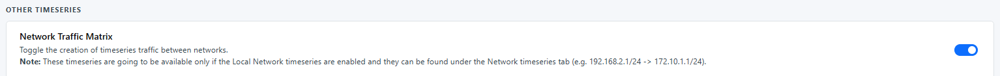
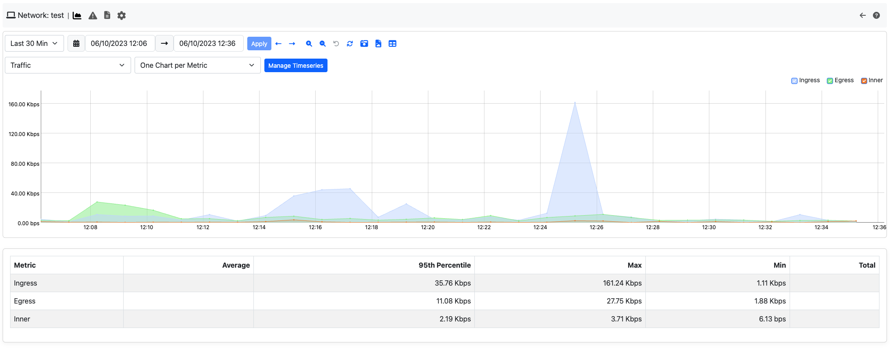

Timeseries
Ntopng creates historical timeseries to be visualized in the charts. In order to store timeseries data, ntopng supports RRD, InfluxDB and ClickHouse as timeseries drivers.
Note
To access these settings, jump to Settings -> Preferences -> Timeseries

Timeseries Preferences
The resolution of data depends on the actual timeseries type. For example, the network interfaces traffic is usually recorded with a 1 second resolution, whereas the hosts L7 protocols data usually have 5 minutes resolution. Moreover, in same cases (e.g. RRD), the resolution of the data depends on how old is the data.
RRD Driver
RRD is the default driver used. It writes data in the form of local .rrd files. RRD automatically aggregates old data to save space, reducing its resolution. Hence older data will be aggregated together and finally be removed after 1 year (in fact RRD stands for Round Robin Database).
Querying a single data series is efficient since the data is contained into a single file, while performing more complex queries on multiple data series (e.g. when trying to determine the top protocols) can take some time. Moreover RRD has shown some limitations when writing a large volume of data, usually leading to gaps in the timeseries data points. With a large volume of data, the use of InfluxDB is suggested.
InfluxDB Driver
ntopng supports writing and fetching timeseries data from an InfluxDB server. Since database communication happens via the network, the server can also be located on an external host.
Note
ntopng supports InfluxDB version 1.x (no 2.x series) and the minimum supported version is 1.5.1

InfluxDB Preferences
Here is an overview of the features ntopng provides:
A database is automatically configured according to the InfluxDB Database field value
It is possible to specify authentication credentials if the InfluxDB database is protected
InfluxDB is really suitable to export high frequency data due to the high insertion throughput. For this reason it’s possible to increase the timeseries resolution to get more detailed historical data. This can be configured from the “L7 Application Resolution” preference.
Warning
Increasing the timeseries resolution involves more buffering into ntopng. This will have a strong impact on the RAM usage on large networks.
Warning
In order to avoid “max-values-per-tag limit exceeded” errors with InfluxDB leading to new data being rejected, it’s necessary to set max-values-per-tag = 0 in the InfluxDB configuration file, usually located at /etc/influxdb/influxdb.conf
Warning
In order to avoid “max-series-per-database limit exceeded” errors with InfluxDB leading to new data being rejected, it’s necessary to set max-series-per-database = 0 in the InfluxDB configuration file, usually located at /etc/influxdb/influxdb.conf. Please note that an high cardinality of timeseries may lead to writes/reads performance degradation. You can reduce the cardinality by disabling some timeseries and decreasing the maximum timeseries Data Retention.
Note
It is possible to review the current InfluxDB storage size used by ntopng from the “Runtime Status” page.
InfluxDB status can be monitored using the InfluxDB Monitor.
Authentication
InfluxDB supports HTTP/HTTPS authentication. To enable HTTP/HTTPS authentication, use the preferences toggle and specify a valid username/password pair.
To enable InfluxDB authentication follow the steps highlighted at https://github.com/influxdata/influxdb/issues/8824#issuecomment-329746475.
Note
ntopng creates retention policies and continuous queries. This requires an InfludDB user with admin privileges. It is not possible for non-admin users to create retention policies (https://stackoverflow.com/a/45656074).
Therefore, an admin user is required the first time ntopng is set up to use InfluxDB to allow creation of retention policies and continuous queries. Once the database has been created, a non-privileged user can used.
Using InfluxDB 2.x
Note
Support for InfluxDB 2.x is only partial: ntopng talks to it through the v1-compatible REST API that InfluxDB 2.x still exposes, rather than through native v2 endpoints.
Even though ntopng natively targets InfluxDB 1.x, an InfluxDB 2.x instance can still be used as a timeseries backend, because InfluxDB 2.x keeps a subset of the v1 REST API available for backward compatibility. To use it, a bucket must be created and explicitly exposed through that v1-compatible API, and ntopng must then be pointed to it as if it were talking to an InfluxDB 1.x server.
The following steps describe how to set this up.
Log into the InfluxDB 2.x web interface and create a new bucket dedicated to ntopng (for example, named
ntopng).

InfluxDB V.2 Create Bucket
Enable v1 API compatibility for that bucket by running the following command from a terminal with access to the InfluxDB 2.x instance:
influx v1 auth create --read-bucket BUCKET_ID --write-bucket BUCKET_ID \ --username USERNAME_FOR_NTOPNG --password PASSWORD_FOR_NTOPNG \ --org YOUR_ORGANIZATION --token REST_API_TOKEN_PROVIDED_BY_INFLUX
Where:
BUCKET_IDis the id of the bucket just created, as shown in the InfluxDB 2.x web interface.USERNAME_FOR_NTOPNGandPASSWORD_FOR_NTOPNGare credentials of your choice, which will be entered later in the ntopng InfluxDB Authentication preferences.YOUR_ORGANIZATIONis the organization name configured in InfluxDB 2.x (typically the one chosen during the first login).REST_API_TOKEN_PROVIDED_BY_INFLUXis an API token, either the one shown at first login or one generated from the API Tokens section of the InfluxDB 2.x web interface.
In ntopng, go to Settings -> Preferences -> Timeseries and configure the following fields:
Timeseries Driver: select
InfluxDB 1.x.InfluxDB URL: the URL of the InfluxDB 2.x REST API (by default,
http://localhost:8086).InfluxDB Database: the name of the bucket created for ntopng (e.g.
ntopng).Enable InfluxDB Authentication.
Username and Password: the credentials created with the
influx v1 auth createcommand above.
Once these preferences are saved, ntopng will start exporting data to the InfluxDB 2.x bucket.
Warning
InfluxDB 2.x removed support for the RETENTION, CREATE and
DROP keywords from the REST API. This means that, unlike with
InfluxDB 1.x, ntopng cannot manage data retention or drop old data on an
InfluxDB 2.x backend. Retention policies must instead be configured and
managed directly from the InfluxDB 2.x web interface.
ClickHouse Driver
Note
ClickHouse timeseries support requires an Enterprise M or better license and ClickHouse enabled via configuration file.
ntopng supports writing and querying timeseries data from a ClickHouse server. ClickHouse is a database optimized for high-throughput analytical queries, making it well-suited for timeseries workloads at scale.
Unlike RRD (which uses per-entity local files) ClickHouse stores all timeseries data in a single centralized table with a flexible tag/metric map layout, making it suitable for third party integrations like Grafana. This enables:
High write throughput: data is buffered in-memory per interface and flushed to ClickHouse in batches, avoiding the I/O bottleneck of per-file RRD writes.
Flexible retention: a single TTL setting controls when data expires; no pre-defined round-robin archives.
Efficient top-K queries: aggregations across all entities (e.g. top protocols, top hosts) run as a single SQL query rather than scanning many individual files.
Cluster and cloud support: the driver supports standalone instances, distributed clusters, and ClickHouse Cloud.
To use ClickHouse as the timeseries driver, set the timeseries driver preference to
clickhouse in the ntopng preferences UI, or configure the -F option with a ClickHouse
mode. See ClickHouse Timeseries for detailed configuration and architecture.
Grafana Dashboard
When ClickHouse is enabled as the timeseries backend, ntopng provides a sample Grafana dashboard that can be downloaded directly from the ntopng Preferences page under the Timeseries section. The dashboard is pre-configured to connect to the same ClickHouse instance used by ntopng and includes panels for the most common traffic metrics such as interface throughput, top applications, and top hosts.
The Grafana dashboard download button appears in the Timeseries preferences when ClickHouse is selected as the driver.
To import the dashboard into Grafana, download the JSON file from the Preferences page and use the Grafana Import function (Dashboards → Import → Upload JSON file).
Note
The dashboard requires the grafana-clickhouse-datasource plugin to be installed in Grafana.
Once installed, configure a ClickHouse data source in Grafana pointing to the same server and database used by ntopng, then import the downloaded JSON file.
Timeseries Configuration
Individual timeseries can be enabled or disabled based on the user needs or system limits. Such limits usually are:
the storage size (more timeseries means more storage)
the storage speed
the time needed to write such timeseries to the timeseries database (in particular, this is a problem with RRD)
Moreover, having a lot of timeseries usually means slower query time.

Enabling a “Traffic” timeseries usually has little impact on the performance. On the other hand, enabling the “Layer-7 Applications” (in particular for the local hosts) has a high impact since there are many protocols and timeseries must be processed for each of them.
It is possible to skip timeseries generation for a specific network interface from the interface settings page. By disabling timeseries generation on a network interface, no timeseries data will be written for the interface itself and for all the local hosts belonging to it.

ntopng also provides timeseries on other traffic elements such as Autonomous Systems, Countries, VLANs and so on, which can be enabled independently.

Network Matrix Timeseries
Note
Network Matrix is not available in the community edition.
ntopng can store timeseries for communicatins across local networks, called Network Matrix.
It represent the traffic done between Local Networks (can be added to ntopng using the -m option in the configuration file), both sent and received.

It can be found into the Networks timeseries page; to jump to it, access the Networks tab and then click the charts icon. This specific timeseries is reported in all time presets except the last 5 minutes.
